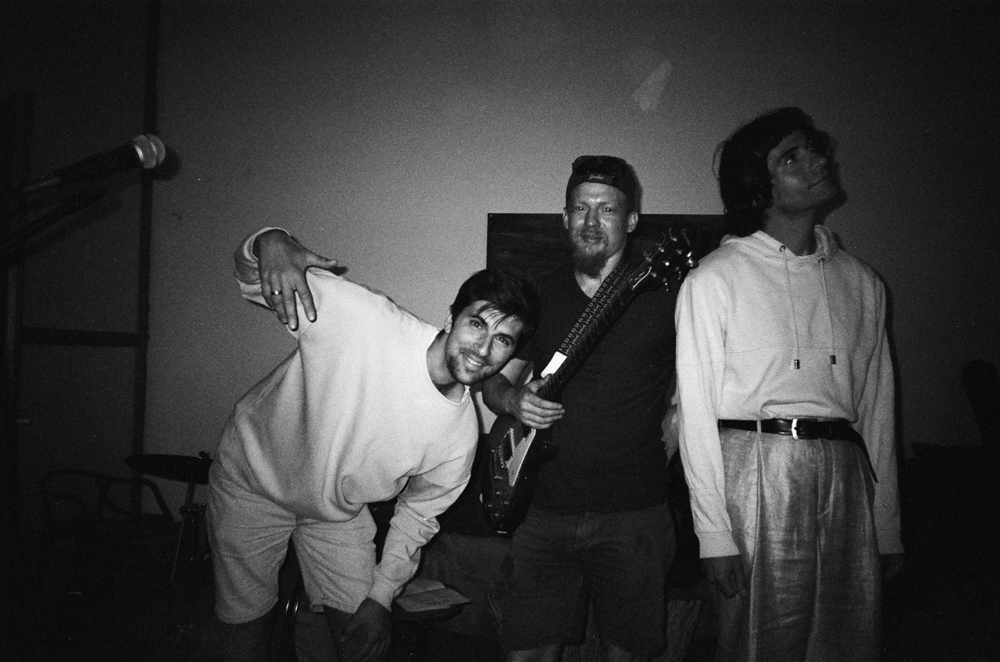

ПИЛИМ
Мастерская звука и дерева в Севкабель-Порту

«Пилим и Пилим» — независимая мастерская, объединяющая ремесло, музыку и культуру совместного творчества. Мы создаём предметы из дерева, строим музыкальные инструменты, проводим встречи и исследуем, как материалы, звук и люди могут вдохновлять друг друга.

Пьем чай
Пауза — настройка слуха. Завариваем, разливаем, молчим. Слушаем воду, стук пиал, дыхание залива. Чаем занимается Хранитель пауз. Посуда — ручная работа, можно заполучить.
Делаем классные деревяшки
Чайные принадлежности и другая красота из дерева разных пород. Масло вместо лака. Слышишь? — это дерево дышит. Каждая поверхность хранит след инструмента и времени.


Строим музыкальные инструменты
Гравитон — гравитационный аккорд. Гул планетарного масштаба. Кахон Фибоначчи — перкуссионный ящик в золотой пропорции. Сухой глубокий бас. Монохорд — одна струна, сто смыслов. Медитация в дереве и звуке.
Играем музыку
Каждая встреча заканчивается общей игрой. Без нот, без правил. Кто-то задаёт ритм на кахоне, кто-то ласкает монохорд, кто-то просто сидит. Записываем фрагмент — он уходит в закрытый чат «заварили-запилили».


Джемы
Джем — это совместная игра, где музыка рождается прямо здесь и сейчас. Мы собираемся вместе, берём инструменты и создаём живой звук без сценария и подготовки.
В мастерской есть всё необходимое для игры: гитара, бас, ударные и другие инструменты. Мы рады людям, которые любят музыку, играют сами, поют, сочиняют или просто хотят попробовать себя в новом звуке.
Никакой сцены. Никаких зрителей. Только звук, люди и совместная игра.
Мастер-классы
Мы создаём встречи, где можно работать руками, узнавать новое и делать вещи из дерева своими руками.
Будем собирать музыкальные инструменты, пробовать разные техники и исследовать связь между материалом, звуком и человеком.
Расписание пока формируется.
Но вы уже можете присоединиться к нам — оставьте свою почту, и мы напишем вам первыми, когда объявим даты новых мастер-классов, джемов и других событий.
А пока можно заглянуть в наш Telegram. Там мы делимся новостями мастерской, рассказываем о будущих встречах и показываем, чем живёт «Пилим и Пилим».
А если хочется познакомиться лично — приходите в гости. Будем рады новым друзьям, любителям дерева, звука и хорошего чая.
